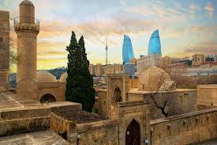
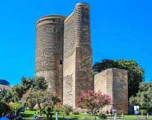
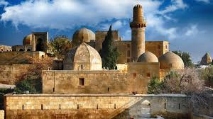
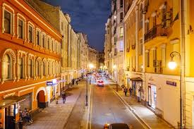

Azerbaycan’ın tarihi kalbi • UNESCO Dünya Mirası
İçerişehir, Azerbaycan’ın başkenti Bakü’nün en eski yerleşim alanıdır. 12. yüzyıldan kalma surlarla çevrili bu bölge, Azerbaycan’ın tarihini, kültürünü ve mimarisini günümüze kadar taşıyan en önemli merkezdir. UNESCO Dünya Mirası Listesi'nde yer almaktadır.
Bu bölgede dar taş sokaklar, tarihi evler, camiler ve saraylar bulunur. Hem yerli hem yabancı turistlerin en çok ziyaret ettiği yerlerden biridir.


Kız Kalesi, İçerişehir’in en önemli simgelerinden biridir. Yaklaşık 12. yüzyılda inşa edilmiştir ve Bakü’nün sembolü olarak kabul edilir. Hem savunma hem de gözlem amacıyla kullanıldığı düşünülmektedir.
Şirvanşahlar Sarayı, Orta Çağ Azerbaycan mimarisinin en önemli eserlerinden biridir. 15. yüzyılda inşa edilmiştir ve saray, cami, türbe ve hamamdan oluşan büyük bir komplekstir.


İçerişehir’in dar ve taş sokakları geçmişin izlerini günümüze taşır. Bu sokaklarda yürürken adeta tarihte yolculuk yapıyormuş hissi oluşur.